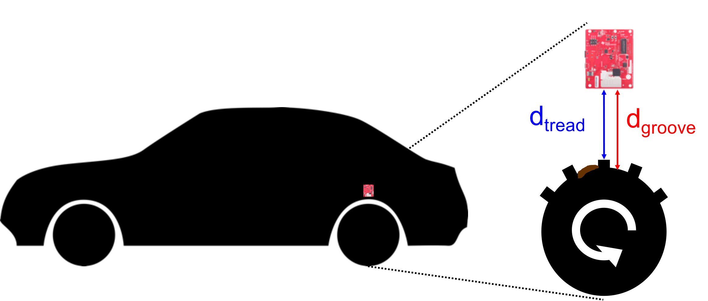

Project Osprey: A mmWave Approach to Tire Wear Sensing

Tire wear affects safety and performance of automobiles. Past solutions are either inaccurate, requires sensors embedded in tires or are prone to road debris. Osprey proposes a sensor system design based on automotive mmWave radars and designs algorithms to measure tire wear while overcoming challenges related to road debris. In addition, the principles used also open up solutions for detecting and localizing harmful metallic foreign objects in the tire.
VIDEO
CITATION
- Osprey: A mmWave Approach to Tire Wear Sensing, Akarsh Prabhakara, Vaibhav Singh, Swarun Kumar and Anthony Rowe, MobiSys 2020 (Best Paper Honorable Mention) PAPER SLIDES
- Osprey Demo: A mmWave Approach to Tire Wear Sensing, Akarsh Prabhakara, Vaibhav Singh, Swarun Kumar and Anthony Rowe, MobiSys 2020 PAPER